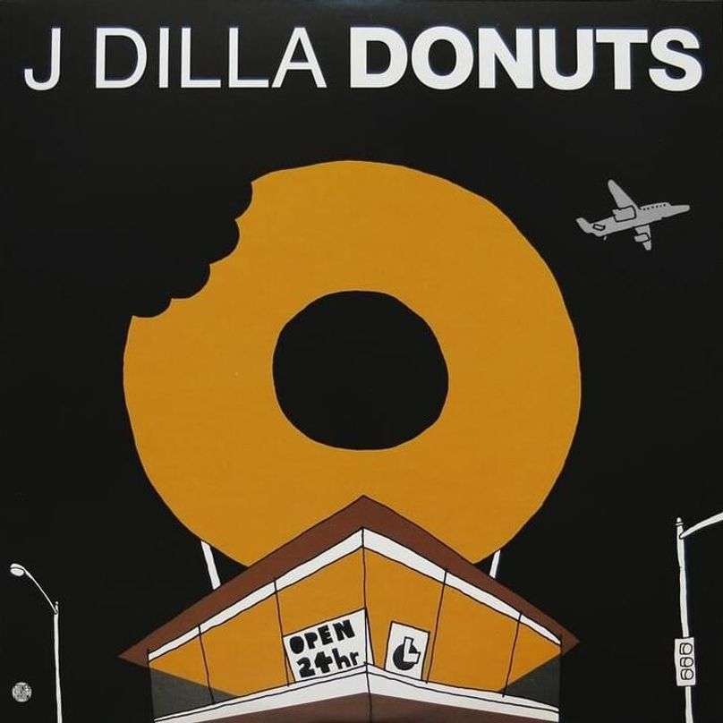

Donuts

Description:
Donuts is the second studio album by the American hip hop producer J Dilla, released on February 7, 2006.
Donuts was released to universal acclaim from music critics. Scoring 84 on Metacritic and having many rappers performing over its instrumentals
Ingredients:
- Donuts (Outro)
- Workinonit
- Waves
- Light My Fire
- The New
- Stop!
- People
- The Diff'rence
- Mash
- Time: The Donut of the Heart
- Glazed
- Airworks
- Lightworks
- Stepson of the Clapper
- The Twister (Huh, What)
- One Eleven
|
- Two Can Win
- Don't Cry
- Anti-American Graffiti
- Geek Down
- Thunder
- Gobstopper
- One for Ghost
- Dilla Says Go
- Walkinonit
- The Factory
- U-Love
- Hi.
- Bye.
- Last Donut of the Night
- Welcome to the Show
|
Steps:
- Open in your favorite media player.
- Enjoy.